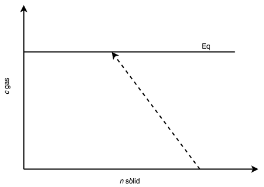
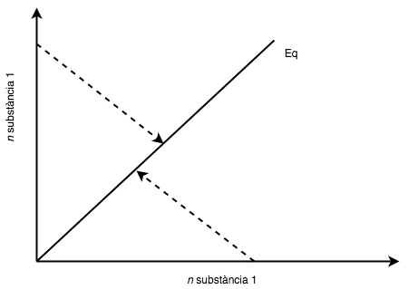
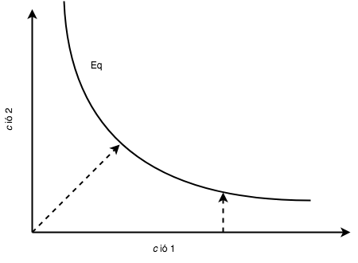
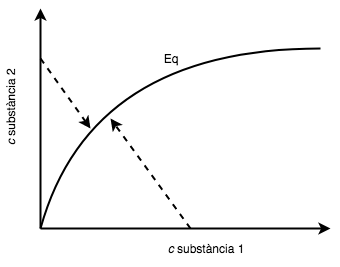

Capítol 3 Piles i bateries
(darrera actualització: 8 d’abril de 2026)
Índex
En aquest capítol estudiarem els processos electroquímics que tenen lloc en les piles i bateries, així com els conceptes de potencial, energia lliure i equilibri químic que ens permetran entendre la seva funcionalitat[1]. El tema explora en particular els processos REDOX, la sèrie electroquímica, l’energia lliure i l’espontaneïtat de les reaccions, així com l’equilibri iònic en solucions aquoses, incloent-hi les reaccions àcid-base. Podeu trobar més informació sobre aquests temes als capítols Reacciones en disolución acuosa, Reacciones Ácido-Base i Electroquímica de [5].
3.1 Reaccions de reducció/oxidació (REDOX)
En tot procés REDOX, un element o component químic guanya electrons d’un altre. L’espècie que perd electrons s’oxida, mentre que la que els guanya es redueix. Així, tota reacció REDOX implica oxidació i reducció simultànies.
Els químics també classifiquen els agents REDOX segons la seva funció. Una substància que s’oxida fàcilment és un bon agent reductor, ja que afavoreix la reducció d’altres espècies. Per contra, una substància que accepta electrons fàcilment és un bon agent oxidant. Per exemple, en totes aquestes reaccions en les quals participa el zinc hi ha el mateix procés d’oxidació (pèrdua d’electrons) d’aquest element:
En totes aquestes reaccions, el actua com a agent reductor, ja que amb la seva pròpia oxidació redueix l’altra substància.
Per ordenar aquestes substàncies segons la seva facilitat de reducció, s’utilitza la sèrie electroquímica o sèrie d’activitat.
Quan observem la taula periòdica, podem apreciar que hi ha elements amb gran capacitat de donar electrons (metalls alcalins i alcalinoterris, per exemple) i anomenem electropositius. De la mateixa manera, anomenem electronegatius els elements que tenen gran capacitat d’acceptar electrons. Hi ha diverses propostes per assignar electronegativitat als diferents elements, com la de Pauling, Mulliken o Allred-Rochow. Podeu trobar una bona comparativa dels valors aquí.
Definim l’estat d’oxidació d’un àtom com la suma de càrregues positives i negatives que té. Els nombres d’oxidació permeten seguir el flux d’electrons en una reacció química. En general, el nombre d’oxidació d’un ió coincideix amb la seva càrrega ideal, tot i que els metalls de transició i alguns no-metalls poden tenir diferents estats d’oxidació. Quan una substància es redueix, el seu nombre d’oxidació disminueix, encara que no necessàriament esdevingui negatiu. La reducció implica guanyar electrons, mentre que l’oxidació implica perdre’ls, fent el nombre d’oxidació més positiu.
En l’enllaç iònic que forma el , l’estat d’oxidació del sodi és +1 i del clor -1. En una molècula, usem els següents criteris per assignar els estats d’oxidació (EO) als diferents elements:
-
1. L’EO dels elements en qualsevol forma al.lotròpica1 en què presentin és zero.
-
2. L’EO de l’oxigen és -2 en tots els seus compostos, excepte en els peròxids (, ).
-
3. L’EO de l’hidrogen és +1 en tots els compostos, excepte en aquells que forma amb metalls, on és -1.
-
4. L’EO de la resta d’elements d’una substància s’escullen per tal que la suma de tots ells sigui zero o bé la càrrega que hagi de tenir l’ió que formen.
Pel fet que podem identificar, en una reacció REDOX, les substancies que es redueixen i les que s’oxiden, podem també separar la reacció global en els dos processos (que anomenem mitges reaccions), ja que ens serà útil per comprendre que, de la mateixa manera que fem amb els elements de la reacció, també ens caldrà igualar el nombre d’electrons que s’intercanvien. En la reacció global representada a la Figura 3.1 hi ha dos processos simultanis, un a cada vas de reacció:
Això també implica que una reacció REDOX es pot dividir físicament en dos compartiments i que els electrons es poden arribar a compartir amb un conductor, com s’aprecia a la figura. El pont salí fa que es mantingui el balanç de càrregues positives i negatives a cada vas.
1 Forma química en la que un element no forma enllaços químics amb altres àtoms. Per exemple, l’oxigen pot presentar-se com a o .
Electròlits
Un electròlit és una substància que, en dissoldre’s en aigua, es descompon en ions. Això permet que el corrent elèctric es pugui moure a través de la dissolució. Els ions positius es mouen cap a l’electrode negatiu (en una cel.la galvànica, el càtode) i els negatius cap a l’electrode positiu (ànode). Les substàncies que no es descomponen en ions s’anomenen no-electròlits. Exemples d’electròlits són els àcids, les bases i les sals. Per representar la dissolució d’un electròlit en ions, sovint s’utilitza la notació de dissociació iònica. Per exemple, la dissolució de clorur de sodi es pot representar com:
Quan afegim compostos iònics a l’aigua, els ions individuals interaccionen amb les regions polars de les molècules d’aigua i els seus enllaços iònics es trenquen en el procés de dissociació.
Per exemple, considerem la sal de taula (, o clorur de sodi): quan afegim cristalls de a l’aigua, les molècules de es dissocien en ions  i
i  , i es formen esferes d’hidratació al voltant dels ions, tal com s’il.lustra a la figura. La càrrega parcialment negativa de l’oxigen de la molècula d’aigua envolta l’ió sodi positiu, mentre que la càrrega parcialment positiva de l’hidrogen de la molècula d’aigua envolta l’ió clorur negatiu. Aquesta interacció
entre els ions i les molècules d’aigua és el que permet que els ions es mantinguin dispersos en la dissolució.
, i es formen esferes d’hidratació al voltant dels ions, tal com s’il.lustra a la figura. La càrrega parcialment negativa de l’oxigen de la molècula d’aigua envolta l’ió sodi positiu, mentre que la càrrega parcialment positiva de l’hidrogen de la molècula d’aigua envolta l’ió clorur negatiu. Aquesta interacció
entre els ions i les molècules d’aigua és el que permet que els ions es mantinguin dispersos en la dissolució.
Separar les dues semireaccions d’una reacció REDOX ajuda a balancejar l’equació global (tenint en compte també els electrons que s’intercanvien) a més de permetre tenir mesures de la tendencia a oxidar/reduir de cada substància. Per fer el balanç, seguim quatre passos:
-
1. Identifiquem les espècies que es redueixen o s’oxiden.
-
2. Escrivim les dues mitges reaccions.
-
3. Igualem les dues semireaccions en base als elements i les càrregues.
-
4. Les sumem per obtenir la reacció global.
EXEMPLE 1. Balanç REDOX en medi bàsic: peròxid i iodur
Volem equilibrar:
Semireaccions:
![\[ \ch {2 I- <=> I2 + 2 e-} \]](web_GEAPiles-images/image-23.svg)
Sumant-les, obtenim l’equació global equilibrada:
EXEMPLE 2. Balanç REDOX en medi àcid: permanganat i iodur
Volem equilibrar:
Semireaccions en medi àcid:
Fixa’t que hem d’afegir, primer, 8 protons a la primera semireacció per tal de balancejar els hidrogens i, en conseqüència, 4 molècules d’aigua per balancejar els oxígens.
Observem que per tal de tenir el mateix nombre d’electrons a cada semireacció, hem de multiplicar la primera per 2 i la segona per 5:
Sumant-les, obtenim:
Tant en la cel.la galvànica de la Figura 3.1 com en la bateria d’ió Liti de la Figura 3.2, aprofitem el potencial REDOX de les substàncies per tal d’acumular energia química i transformar-la en elèctrica. Anomenarem càtode a l’electrode on té lloc la reducció i ànode on té lloc l’oxidació.
Funcionament de les bateries d’ió liti
Les bateries d’ió liti (Figura 3.2) formen part de la vida quotidiana de milions de persones: alimenten portàtils, telèfons mòbils, vehicles híbrids i cotxes elèctrics. La seva popularitat es deu principalment al baix pes, l’alta densitat d’energia i la capacitat de recàrrega.
Una bateria està formada per un ànode, un càtode, un separador, un electròlit i dos coll.lectors de corrent (positiu i negatiu). L’ànode i el càtode emmagatzemen el liti. L’electròlit transporta els ions liti (amb càrrega positiva) de l’ànode al càtode, i a l’inrevés, a través del separador. Aquest moviment iònic genera electrons lliures a l’ànode i, per tant, una diferència de potencial al coll.lector positiu. El corrent elèctric circula llavors pel circuit extern (el dispositiu alimentat) fins al coll.lector negatiu. El separador impedeix el pas directe d’electrons dins la bateria.
Descàrrega i càrrega. Durant la descàrrega, la bateria subministra corrent: l’ànode allibera ions liti cap al càtode i es produeix el flux d’electrons pel circuit extern. Durant la càrrega (quan connectem el dispositiu), el procés s’inverteix: el càtode allibera ions liti i l’ànode els incorpora.
Densitat d’energia i densitat de potència. Són dos conceptes clau en bateries. La densitat d’energia (Wh/kg) indica quanta energia pot emmagatzemar la bateria per unitat de massa. La densitat de potència (W/kg) indica quina potència pot lliurar per unitat de massa. Una analogia útil és la d’una piscina: la densitat d’energia correspon a la quantitat total d’aigua que hi cap, mentre que la densitat de potència correspon a la rapidesa amb què la podem buidar.
Podem definir el potencial estàndar d’una cel.la, , com al potencial pres en unes condicions determinades, que es fixen com a 1M per a tots els materials solubles, 1 atm per als gasos i, en el cas dels sòlids, la seva forma més estable a 25. A partir del potencial podem calcular el treball elèctric fent
Si la reacció és espontànea, el potencial serà positiu. Per tal de poder tabular els potencials de moltes substàncies, es va prendre la convenció d’assignar el potencial de 0 volt a la mitja reacció:
3.2 Termodinàmica i espontaneïtat de les reaccions químiques
3.2.1 Energia lliure i espontaneïtat
Per a estudiar l’espontaneïtat d’una reacció química hem de tenir en compte l’energia lliure, concepte fonamental en termodinàmica que determina l’espontaneïtat i equilibri dels processos químics i físics:
-
• Energia lliure de Helmholtz (), útil en sistemes a volum i temperatura constants. Es defineix com . Per a un sistema tancat simple (composició fixa) amb només treball :
i, usant la relació fonamental , obtenim:
Així, a
 i
i  constants, és el potencial termodinàmic adequat per analitzar espontaneïtat.
constants, és el potencial termodinàmic adequat per analitzar espontaneïtat.
-
• Energia lliure de Gibbs (), rellevant en processos a pressió i temperatura constants. Es defineix com , amb . El diferencial és:
i com que
substituint resulta:
Per connectar directament amb reaccions químiques, partim de la definició de en forma finita:
Si el procés és isoterm (
constant), , i per tant:
La condició d’espontaneïtat per a una reacció és:
Per tal de determinar si una reacció REDOX és espontània, podem utilitzar la taula de potencials estàndard. Si el potencial de la reacció és positiu, la reacció és espontània. Això també ens permet determinar la direcció de la reacció, ja que la reacció es donarà en el sentit de la disminució de l’energia lliure. L’energia lliure d’una reacció REDOX es pot calcular fent
on  és el nombre d’electrons intercanviats, és la constant de Faraday i és el potencial de la reacció.
és el nombre d’electrons intercanviats, és la constant de Faraday i és el potencial de la reacció.
3.2.2 Energia lliure i equilibri químic
L’equilibri químic es produeix quan la velocitat de la reacció directa és igual a la velocitat de la reacció inversa, fent que les concentracions dels reactius i productes es mantinguin constants en el temps. La Taula 3.1 mostra diferents tipus de reaccions en equilibri i la seva representació gràfica. Un exemple general d’una reacció reversible és:
on:
-
• i són reactius,
-
•
 i són productes,
i són productes,
-
• són els coeficients estequiomètrics.
La constant d’equilibri en termes de concentracions ( ) es defineix com:
) es defineix com:
Si la reacció implica gasos, es pot expressar en termes de pressions parcials:
La relació entre i ve donada per:
on és la variació del nombre de mols gasosos.
| Tipus de reacció (Exemple) | representació gràfica de l’equilibri |
|
 |
|
|
 |
|
|
 |
|
|
 |
Principi de Le Chatelier
Estableix que si es fa una alteració en un sistema en equilibri, aquest es desplaçarà per contrarestar el canvi. Els factors que afecten l’equilibri són:
-
• Canvis de concentració:
-
– Afegir reactius desplaça l’equilibri cap als productes i viceversa.
-
-
• Canvis de pressió:
-
– Si la reacció involucra gasos, augmentar la pressió afavoreix el costat amb menys mols gasosos.
-
-
• Canvis de temperatura:
-
– En reaccions exotèrmiques (), augmentar
 desplaça l’equilibri cap als reactius.
desplaça l’equilibri cap als reactius.
-
– En reaccions endotèrmiques (), augmentar
afavoreix els productes.
-
L’energia lliure de Gibbs està relacionada amb la constant d’equilibri  d’una reacció, que veurem a la secció 3.3, i en determina l’espontaneïtat:
d’una reacció, que veurem a la secció 3.3, i en determina l’espontaneïtat:
on és el coeficient de reacció, definit com:
per a les concentracions en qualsevol punt de la reacció. A l’equilibri (, ):
L’entalpia lliure normal ( ) es pot calcular a partir de les energies lliures de formació de les substàncies:
) es pot calcular a partir de les energies lliures de formació de les substàncies:
i correspon a la situació en la que tots els reactius i productes es troben a 1 atm, si son gasos, o a 1 M si son dissolts en aigua.
-
• Si , i la reacció és espontània en sentit directe.
-
• Si , i la reacció és no espontània en sentit directe.
3.2.3 Equació de Nernst
El voltatge real d’una cel.la depèn de la concentració. A partir de la podem veure com, per a una reacció del tipus
![\[ \ch {a A + b B <=> c C + d D} \]](web_GEAPiles-images/image-102.svg)
el voltatge de la cel.la es calcularà fent
És fàcil veure que, en l’equilibri, .
Desenvolupament de l’equació de Nernst
L’energia lliure de Gibbs d’una reacció electroquímica està relacionada amb el potencial elèctric.
Com que i , substituint a l’equació de Gibbs:
Dividint per :
Si considerem la temperatura estàndard de 298 K i la constant de gas ideal:
Així, l’equació de Nernst per a una reacció amb  electrons es pot escriure com:
electrons es pot escriure com:
o en base decimal:
on la constant surt de convertir de logaritme neperià a decimal:
i, per tant,
que habitualment arrodonim com (a ). Si la temperatura no és , cal usar la forma general en lloc de la constant numèrica.
3.3 Equilibri iònic en solucions aquoses
Moltes reaccions químiques tenen lloc en dissolucions aquoses, on els ions es troben en equilibri. Aquest equilibri es pot descriure amb la constant d’equilibri, que ens permet predir la direcció de la reacció i la seva espontaneïtat. En aquesta secció explorarem les reaccions que descriuen processos àcid/base.
3.3.1 Reaccions àcid-base
Així com les reaccions REDOX impliquen una transferència electrònica, existeixen reaccions en les quals hi ha una transferència protònica (), com a mínim en la definició de Lowry-Brønsted (veure més avall), i que anomenem de àcid-base (Figura 3.3).
Hi ha tres gran teories que permeten explicar el concepte àcid-base:2
-
• Arrhenius: Arrhenius (1880-1890) va desenvolupar la teoria segons la qual àcids i bases es dissociaven en els seus ions segons:
En realitat, l’existència de l’ió és fictícia, ja que es troba sempre solvatat amb una molècula d’aigua en forma de o estats d’hidratació superior.
-
• Lowry-Brønsted: Això ens duu de forma natural al concepte d’àcid-base formulat per Lowry-Brønsted (1923): un àcid és una espècie química amb tendència a donar un protó, i una base a acceptar-lo. Així, ens queda:
-
– a) : És un àcid de Brønsted, ja que pot donar un protó.
-
– b) : És una base de Brønsted, ja que pot acceptar un protó.
-
– c) : Pot actuar com a àcid (cedint un protó i formant ) o com a base (acceptant un protó i formant ), per tant, és una espècie amfipròtica.
Per a una reacció àcid-base d’una substància acídica en aigua tindríem, per exemple:
A partir d’aquesta expressió, podem escriure la constant d’equilibri, o constant de dissociació de l’àcid
 , de la reacció com3
, de la reacció com3
-
-
• Lewis: Finalment, també podem entendre el concepte d’àcid-base a partir de la definició de Lewis (1923). Segons aquesta definició, un àcid és qualsevol substància que pot acceptar electrons, mentre que una base és tota substància que en pot donar. Es tracta d’una definició més general, ja que no requereix la presència de protons.
o bé
![\[ \ch {HSO4- + H2O <=> H3O+ + SO4^{2-}} \]](web_GEAPiles-images/image-132.svg)
![\[ K_a = \frac {[\ch {H3O+}][\ch {SO4^{2-}}]}{[\ch {HSO4-}]} \]](web_GEAPiles-images/image-136.svg)
Per al que segueix usarem essencialment la definició de Lowry-Brønsted.
2 D’entre els molts recursos disponibles a la xarxa, és particularment simple i ben explicat el que trobareu a https://www.chemguide.co.uk/physical/acidbaseeqia/theories.html
3 Pots trobar dades de i  a https://chem.libretexts.org/Reference/Reference_Tables/Equilibrium_Constants
a https://chem.libretexts.org/Reference/Reference_Tables/Equilibrium_Constants
3.3.2 Equilibri àcid-base
Considerem un àcid dèbil genèric en dissolució aquosa:
La seva constant d’acidesa es defineix com:
![\[ K_a = \frac {[\ch {H3O+}][\ch {A^-}]}{[\ch {HA}]} \]](web_GEAPiles-images/image-141.svg)
Podem veure com la constant d’equilibri d’aquesta reacció d’ionització. Tanmateix, en termes generals, si tenim una reacció química del tipus:
la seva constant d’equilibri es defineix com:
Sabem que en dissolució aquosa, la concentració de l’aigua és pràcticament constant i es pot incloure en la constant d’equilibri:
![\[ K_a = K_{\text {eq}} [\ch {H2O}] \]](web_GEAPiles-images/image-146.svg)
EXEMPLE 3. Ionització dels àcids dipròtics
La ionització dels àcids dipròtics en dissolució aquosa és un dels nombrosos exemples coneguts d’equilibris múltiples. Per a la dissociació de l’àcid carbònic () a 25 °C, s’han determinat les següents constants d’equilibri[5]:
![\[ \ch {HCO3- (aq) <=> H+ (aq) + CO3^2- (aq)} \]](web_GEAPiles-images/image-150.svg)
La reacció global és la suma d’aquestes dues reaccions:
i la corresponent constant d’equilibri està donada per:
i és fàcil veure que:
3.3.3 L’escala de pH
La reacció d’equilibri de la hidròlisi de l’aigua es pot escriure com
![\[ \ch {H20_{(l)} + H20_{(l)} <=> H3O+_{(aq)} + OH-_{(aq)}} \]](web_GEAPiles-images/image-155.svg)
i té associada una constant d’equilibri  :
:
amb un valor de 10 a 25 C si expressem la concentració dels dos ions en . En aigua pura, doncs, la concentració d’ions i és de 10 M, respectivament. Per tal de facilitar els càlculs treballem normalment en escala logarítmica i definim
C si expressem la concentració dels dos ions en . En aigua pura, doncs, la concentració d’ions i és de 10 M, respectivament. Per tal de facilitar els càlculs treballem normalment en escala logarítmica i definim
Per tant, un valor de pH=7 implica que tenim una dissolució neutra pel que fa a la seva acidesa. Una concentració superior de protons (pH7) implica una dissolució àcida i a l’inrevés.
En equilibri químic, les constants d’acidesa () i de basicitat () d’un parell àcid-base conjugat estan relacionades amb el producte iònic de l’aigua, . Aquesta relació ens permet entendre la força relativa d’àcids i bases conjugades. Considerem un àcid feble que es dissocia en aigua segons:
La seva constant d’acidesa és:
D’altra banda, la base conjugada pot reaccionar amb l’aigua:
Amb la constant de basicitat:
Multiplicant i :
Cancel.lant termes comuns:
Com que el producte iònic de l’aigua és:
obtenim la relació fonamental:
![\[ K_w = K_a K_b \]](web_GEAPiles-images/image-180.svg)
Aquesta equació ens diu que, com més fort és un àcid (major ), més feble serà la seva base conjugada (menor  ), i viceversa. En concret:
), i viceversa. En concret:
-
• Si un àcid és fort (
gran), la seva base conjugada tindrà un petit, per tant, serà feble.
-
• Si una base és forta (
gran), el seu àcid conjugat tindrà un petit, per tant, serà feble.
Com que a 25°C el producte iònic de l’aigua és , això implica que:
Així, si coneixem , podem trobar fàcilment.
Equació de Henderson-Hasselbalch
3.4 Exemple: la bateria de plom-àcid
La bateria de plom de cotxe està composta per 6 cel.les idèntiques connectades en sèrie. Es pot recarregar invertint la reacció electroquímica normal en aplicar un voltatge extern entre el càtode i l’ànode, un procés conegut com electròlisi. En les reaccions químiques espontànies, es converteix l’energia química en energia elèctrica, mentre que en l’electròlisi s’utilitza l’energia elèctrica per induir una reacció química no espontània. La reacció global de descàrrega en una bateria de plom-àcid és[4]:
Les semireaccions són:
El potencial estàndard de la cel·la s’obté sumant els potencials estàndard de les semireaccions:
El material actiu positiu és diòxid de plom altament porós, mentre que el material actiu negatiu és plom finament dividit. L’electròlit és àcid sulfúric aquós diluït, que participa en el procés de descàrrega. Durant la descàrrega, els ions migren cap a l’elèctrode negatiu i produeixen ions i sulfat de plom. A l’elèctrode positiu, el diòxid de plom reacciona amb l’electròlit per formar cristalls de sulfat de plom i aigua. Tots dos elèctrodes es descarreguen fins a formar sulfat de plom, que és un mal conductor, i l’electròlit es dilueix progressivament a mesura que avança la descàrrega (Fig. 3.4).
Durant la càrrega, es produeixen les reaccions inverses. A mesura que les cel.les s’acosten a l’estat complet de càrrega i els elèctrodes es converteixen progressivament de nou en diòxid de plom i plom, s’incrementa la concentració de sulfat. Una càrrega excessiva provocarà pèrdua d’aigua, ja que aquesta es descompon en hidrogen i oxigen per electròlisi. No obstant això, el sobrepotencial necessari per a aquest procés és prou alt perquè la pèrdua d’aigua es pugui gestionar controlant el voltatge de càrrega.
Per a bateries inundades, una selecció adequada dels aliatges de la graella i els paràmetres de càrrega permeten reduir la pèrdua d’aigua a nivells molt baixos, de manera que només cal afegir aigua ocasionalment per al manteniment de la bateria. Tanmateix, si una cel.la segellada està dissenyada perquè l’electròlit estigui immobilitzat en un separador de matriu de vidre absorbent (AGM) o gelificat amb sílice finament dispersa, es poden formar canals entre les plaques positiva i negativa. Aquests canals poden ser porositat interconnectada en les bateries AGM o microesquerdes en el gel, permetent el pas de gas d’oxigen des de l’elèctrode positiu, on es genera, fins a l’elèctrode negatiu, on reacciona amb el plom per formar sulfat de plom. Les reaccions són:

La difusió d’oxigen en fase gasosa des de l’elèctrode positiu al negatiu és molt més ràpida que en l’electròlit líquid. L’oxigen es recombina químicament per produir sulfat de plom, que és el producte normal de descàrrega, despolaritzant la placa, que després es recarrega a plom com en el procés de càrrega normal.
Altres requisits per a les cel.les segellades de recombinació inclouen la selecció d’aliatges de graella amb un alt sobrepotencial d’hidrogen per reduir l’evolució d’hidrogen a l’elèctrode negatiu i, en general, l’ús de materials d’alta puresa tant per als materials actius com per a les graelles. A més, les cel.les han d’incorporar vàlvules unidireccionals per permetre l’alliberament de petites quantitats d’hidrogen i evitar l’entrada d’aire. Les bateries amb aquestes cel.les es coneixen com a bateries de plom-àcid regulades per vàlvula (VRLA), ja que tenen una vàlvula unidireccional que allibera gas de la cel.la quan la pressió interna arriba a un nivell preestablert, però impedeix l’entrada d’aire.
Per aprendre més: http://chembook.org/page.php?chnum=7§=9.
3.5 Exercicis
Exercici 1. Identificar reaccions REDOX
Mostra la resolució
Resolució disponible a Exercise.pdf i als materials d autoavaluacio daquest tema.
Indica quines d’aquestes reaccions és REDOX
-
1.
-
2.
-
3.
-
4.
-
5.
-
6.
-
7.
-
8.
-
9.
-
10.
-
11.
-
12.
-
13.
-
14.
-
15.
-
16.
-
17.
-
18.
-
19.
-
20.
-
21.
-
22.
Exercici 2. Equilibrant reaccions REDOX
Mostra la resolució
Resolució disponible a Exercise.pdf i als materials d autoavaluacio daquest tema.
Iguala les següents reaccions. Pista: quan hagis d’afegir hidrogen, fes-ho en forma de protons .
-
1.
-
2.
-
3.
-
4.
Exercici 3. Igualar reaccions REDOX
Mostra la resolució
Resolució disponible a Exercise.pdf i als materials d autoavaluacio daquest tema.
Iguala la reacció entre en benzaldehid i l’ió per donar àcid benzoïc i ió . Pista: on calguin oxigens, afegeix molècules d’aigua; on calguin hidrogens, afegeix protons.
Exercici 4. Igualar reaccions REDOX
Mostra la resolució
Resolució disponible a Exercise.pdf i als materials d autoavaluacio daquest tema.
Iguala la reacció en una dissolució bàsica. Pista: fes com sempre però al final tingues en compte que els reactius han d’incorporar l’ió .
Exercici 5. Reducció de la magnetita amb monòxid de carboni
Mostra la resolució
Resolució disponible a Exercise.pdf i als materials d autoavaluacio daquest tema.
Mostra les semireaccions implicades en la reducció de l’òxid de ferro mitjançant monòxid de carboni. Suposa que l’òxid de ferro es troba com a magnetita, . A partir d’aquestes semireaccions, dedueix la reacció global i calcula el potencial estàndard de la reacció.
Exercici 6. Equilibri i energia lliure en dissociació/reacció de gasos
Mostra la resolució
Resolució disponible a Exercise.pdf i als materials d autoavaluacio daquest tema.
Pots racionalitzar qualitativament els factors implicats en la descripció de l’equilibri químic en les reaccions:
? Per a les dues reaccions, calcula el valor de a partir de dades termodinàmiques de la literatura ([2]).
Exercici 7. Equilibri 
El clorur de carbonil (), també anomenat fosgen, es va utilitzar a la Primera Guerra Mundial com a gas verinós. Les concentracions d’equilibri a 74 °C per a la reacció entre monòxid de carboni i clor molecular que produeix clorur de carbonil són:
Les concentracions d’equilibri són:
Calcula la constant d’equilibri () de la reacció a aquesta temperatura.
Exercici 8. Equilibri [5]
La constant d’equilibri obtinguda per a la descomposició del pentaclorur de fòsfor en triclorur de fòsfor i clor molecular és 1,05 a 250 °C:
Si les pressions parcials en l’equilibri de  i són de 0,875 atm i 0,463 atm, respectivament, quina és la pressió parcial a l’equilibri del a aquesta temperatura?
i són de 0,875 atm i 0,463 atm, respectivament, quina és la pressió parcial a l’equilibri del a aquesta temperatura?
Exercici 9. Equilibri [5]
El metanol ( ) s’elabora industrialment mitjançant la reacció:
) s’elabora industrialment mitjançant la reacció:
La constant d’equilibri () per a la reacció és de 10,5 a 220 °C. Quin és el valor de a aquesta temperatura?
Exercici 10. Constant de la reacció inversa
Mostra la resolució
Resolució disponible a Exercise.pdf i als materials d autoavaluacio daquest tema.
Quina és la relació entre la constant d’equilibri d’una reacció i la de la seva inversa?
Exercici 11. Composició de constants d’equilibri
Mostra la resolució
Resolució disponible a Exercise.pdf i als materials d autoavaluacio daquest tema.
Escriu la constant d’equilibri de la reacció
a partir de les de les reaccions
i
Exercici 12. Isomerització -butà/isobutà
La constant d’equilibri de la reacció d’isomerització entre l’-butà i l’isobutà és 2.5. Representa gràficament la tendència del sistema en funció de diverses concentracions inicials de cadascuna de les dues substàncies.
Exercici 13. Equilibri de amb  inicial
inicial
La constant d’equilibri de la dissociacio del  sòlid en amoniac i sulfur d’hidrogen és de 0.11 atm. Si posem una mica d’aquest sòlid en un recipient tancat que conté amoniac a una pressió de 0.5 atm. Quina és la pressió final del sistema un cop assolit l’equlibri?
sòlid en amoniac i sulfur d’hidrogen és de 0.11 atm. Si posem una mica d’aquest sòlid en un recipient tancat que conté amoniac a una pressió de 0.5 atm. Quina és la pressió final del sistema un cop assolit l’equlibri?
Exercici 14. Equilibri a 690 K
La constant d’equilibri de la reacció
a 690K és 0.10. Quina és la pressió d’equilibri del sistema si barregem 0.5 mol de i 0.5 mol de  en un recipient de 5 l a 690K? Si augmentéssim la T, la pressió augmentaria o disminuiria?
en un recipient de 5 l a 690K? Si augmentéssim la T, la pressió augmentaria o disminuiria?
Exercici 15. Carbonat/bicarbonat: àcid-base
Mostra la resolució
Resolució disponible a Exercise.pdf i als materials d autoavaluacio daquest tema.
Escriu la reacció àcid-base de l’ió carbonat en aigua en equlibri amb l’ió bicarbonat. Qui té el rol d’àcid i de base en la reacció directa i la inversa?
Exercici 16. Signe i càlcul de 
Per a cadascuna de les següents reaccions, realitza les següents tasques:
-
1. Predir quin serà el signe de per a la reacció.
-
2. Calcular el valor de a partir de les dades de la taula.
Exercici 17. Espontaneïtat segons i
Classifica les següents reaccions segons si són espontànies a qualsevol temperatura, només a baixa temperatura, només a alta temperatura o mai espontànies:
| Reacció | (kJ mol ) ) |
(J K mol) |
| +249 | -277.8 | |
| +460 | -275 | |
| +93.3 | +198.3 | |
| -2044.7 | +101.3 |
Exercici 18. Predicció qualitativa d’espontaneïtat
Mostra la resolució
Resolució disponible a Exercise.pdf i als materials d autoavaluacio daquest tema.
Sense consultar cap taula, prediu quines de les següents reaccions seran espontànies:
-
1.
-
2.
-
3.
-
4.
Exercici 19. Interpretació de  en processos irreversibles
en processos irreversibles
Es considera la funció , anomenada entalpia lliure. Respon:
-
1. Què li succeeix a l’entalpia lliure d’un sistema en un procés irreversible quan només es realitza treball ?
-
2. De quina manera pot tenir lloc una reacció no espontània?
Exercici 20. Balanç de
En una reacció a pressió constant d’1 atm i 298 K, es despren 40 kJ mol de calor sense realitzar treball útil. En un segon cas, la mateixa reacció es realitza de forma que s’obté un màxim treball útil i es desprenen 1,6 kJ mol menys.
Calcula per a cada procés: , ,  ,
,  ,
,  i .
i .
Exercici 21.  : diamant i grafit
: diamant i grafit
Calcula per a la reacció:
Explica per què el diamant no es converteix espontàniament en grafit.
Exercici 22. Vaporització d’aigua a 70 i 100 °C
Mostra la resolució
Resolució disponible a Exercise.pdf i als materials d autoavaluacio daquest tema.
Un mol d’aigua s’evapora a les temperatures de 70ºC i 100ºC, a pressió constant d’1 atm. Es coneix que l’entalpia normal de vaporització de l’aigua és 41,1 kJmol−1.
Calcula:
-
1. del procés de vaporització a les dues temperatures.
-
2. del procés de vaporització a les dues temperatures.
Interpreta els resultats.
Exercici 23.  de
de
Calcula la constant d’equilibri a 298 K per a la reacció:
Utilitza les dades de la taula 9.7.
Exercici 24. Van’t Hoff: calcular a 598 K
La constant d’equilibri de la reacció:
és a 298 K. Si l’entalpia normal de la reacció és , calcula la constant d’equilibri a 598 K.
Exercici 25. Espontaneïtat del reforming amb vapor
Mostra la resolució
Resolució disponible a Exercise.pdf i als materials d autoavaluacio daquest tema.
Calcula el valor aproximat de a 600 K i 1200 K per a la reacció:
Determina si la reacció és espontània a cada temperatura. Suposa que i de la reacció no varien apreciablement amb la temperatura.
Exercici 26. pH àcid feble (Exercici 3.2)
Mostra la resolució
Resolució disponible a Exercise.pdf i als materials d autoavaluacio daquest tema.
Sabent que el pKa de l’àcid acètic és 4,74, calcula el pH d’una dissolució preparada amb 0,305 mol/L d’àcid acètic i 0,328 mol/L d’acetat sòdic.
Exercici 27. Solubilitat 
Quina és la constant de solubilitat del cromat d’argent () si la concentració d’una dissolució saturada d’aquesta sal té una concentració de 6.7 10M d’ions cromat?
10M d’ions cromat?
Exercici 28. Solubilitat 
S’afegeix ió a una dissolució que conté i , ambdós a una concentració de 0.01 M. Què precipita abans, o ? Quina és la concentració d’ions quan la primera sal comença a precipitar? I quina és la concentració de l’anió del primer precipitat quan la segona sal comença a precipitar?
Dades:
Exercici 29. Solubilitat de (Exercici 3.1 2025)
A una dissolució saturada de , s’hi afegeix fins que la concentració d’ions arriba a 0,751 mol/L. Quina serà la concentració resultant d’ions a la dissolució, expressada com a pCl?
(Dades: el producte de solubilitat del és 1,8 · 10−10.)
Exercici 30. Relació entre energia lliure de Gibbs i potencial elèctric (Exercici 3.3 2025)
Mostra la resolució
Resolució disponible a Exercise.pdf i als materials d autoavaluacio daquest tema.
Si la variació de potencial elèctric en un procés químic és de 0,49 V, quina serà la variació de l’energia lliure de Gibbs () associada al procés? (Suposa que el procés transfereix 1 mol d’electrons.)
Exercici 31. Constant d’equilibri amb Nernst
Mostra la resolució
Resolució disponible a Exercise.pdf i als materials d autoavaluacio daquest tema.
Troba la constant d’equilibri de la reacció .
Exercici 32. Pila de i 
Una pila està formada per un elèctrode de submergit en una dissolució 0,05 M de i 0,1 M de , i un altre amb un elèctrode de submergit en una dissolució que conté 0,005 M de i 0,1 M de . Entre les dues dissolucions es col·loca un pont salí.
-
a) Dibuixar l’esquema de la pila indicant l’ànode, el càtode, la polaritat dels elèctrodes, com circulen els electrons i els ions, i la notació abreujada de la pila.
-
b) Escriure la reacció ajustada, indicant l’agent oxidant i el reductor.
-
c) Calcular la constant d’equilibri de la reacció redox.
-
d) Calcular la força electromotriu de la pila a 25 °C.
-
e) Si al càtode s’afegeix oxalat 1 M, calcular la força electromotriu (f.e.m).
Dades:
-
•
-
•
-
•
Exercici 33. Pila de permanganat potàssic
Mostra la resolució
Resolució disponible a Exercise.pdf i als materials d autoavaluacio daquest tema.
Una pila voltaica consta d’una làmina de platí en una dissolució aquosa 0,1 mol/L de permanganat potàssic i 0,01 mol/L de clorur de manganès (II) amb un  igual a 2 en un compartiment, i d’una làmina de coure submergida en una dissolució 0,02 mol/L de sulfat de coure en l’altre.
igual a 2 en un compartiment, i d’una làmina de coure submergida en una dissolució 0,02 mol/L de sulfat de coure en l’altre.
-
a) Dibuixa la pila indicant l’ànode, el càtode, la polaritat dels elèctrodes, com circulen els electrons i els ions. Indica també la notació simplificada de la pila.
-
b) Calcula a 25 °C la f.e.m. de la pila.
-
c) Calcula la variació d’energia lliure a 25 °C.
-
d) Si el
del compartiment del coure fos igual a 8, precipitaria l’hidròxid de coure (II)? Calcula la f.e.m. de la pila en aquest cas.
Dades:
Exercici 34. Cotxes amb cel·la de combustible de metanol
Mostra la resolució
Resolució disponible a Exercise.pdf i als materials d autoavaluacio daquest tema.
Les entalpies i energies lliures de formació (a condicions estàndar) de les espècies d’interès són:
| Substància | (MJ/kmol) | (MJ/kmol) |
| -201.2 | -161.9 | |
| -238.6 | -166.2 | |
| 0 | 0 | |
| -393.5 | -394.4 | |
| -241.8 | -228.6 | |
 |
-285.9 | -237.2 |
-
a) Quanta calor s’obté en cremar 1 kg de metanol en un motor d’explosió interna (IC)?
-
b) Quanta energia elèctrica produiria una pila de combustible ideal per cada kg de combustible?
Traduït d’aquesta col·lecció d’exercicis
Bibliografia
-
[1] Geoffrey M. Bowers i Ruth A. Bowers. Understanding Chemistry through Cars. en. CRC Press, nov. de 2014. isbn: 978-1-4665-7184-6. 10.1201/b17581.
-
[2] David R Lide et al. CRC Handbook of Chemistry and Physics. en. Boca Raton, FL: CRC Press, 2005.
-
[3] Chaofeng Liu, Zachary G. Neale i Guozhong Cao. “Understanding electrochemical potentials of cathode materials in rechargeable batteries”. en. A: Materials Today 19.2 (març de 2016), pàg. 109 - 123. issn: 13697021. 10.1016/j.mattod.2015.10.009.
-
[4] Geoffrey J. May, Alistair Davidson i Boris Monahov. “Lead batteries for utility energy storage: A review”. A: Journal of Energy Storage 15 (febr. de 2018), pàg. 145 - 157. issn: 2352-152X. 10.1016/j.est.2017.11.008.
-
[5] Jason Overby i Raymond Chang. QUÍMICA. 13a ed. McGraw-Hill, 2021. isbn: 978-1-4562-7994-3. uRl: https://www-ingebook-com.biblioremot.uvic.cat/ib/NPcd/IB_BooksVis?cod_primaria=1000187&codigo_libro=10619 (cons. 09-03-2025).